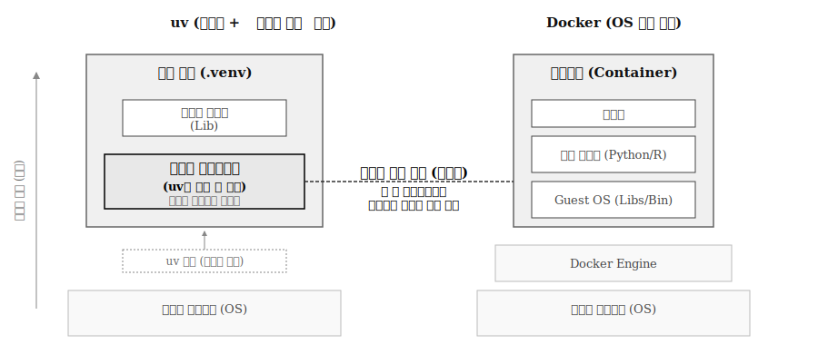

| 특성 | uv | 도커 |
|---|---|---|
| 격리 수준 | 파이썬 패키지 수준 (가상 환경) | OS 수준 (완전한 컨테이너) |
| 범위 | 파이썬 패키지만 관리 | 파이썬, R, 시스템 라이브러리, OS 설정 등 전체 |
| 무게 | 매우 가볍고 빠름 (러스트 기반) | 상대적으로 무거움 (이미지 크기 수백 MB~GB) |
| 시작 속도 | 즉시 (초 단위) | 컨테이너 시작 필요 (초~분) |
| 학습 곡선 | 낮음 (pip/venv 익숙하면 쉬움) | 높음 (Dockerfile, 이미지, 컨테이너 개념) |
| 사용 시나리오 | 로컬 파이썬 개발 | 복잡한 멀티 언어 프로젝트, 배포, CI/CD |
| 시스템 의존성 | 시스템 라이브러리에 의존 | 시스템과 완전 독립 |
5 개발 환경 구축
AI로 데이터 과학 문제를 해결하기 위한 첫걸음은 강력한 프로그래밍 언어와 안정적인 개발 환경 구축이다. 본 장에서는 필수적인 버전 관리 도구 Git과 재현 가능한 환경을 위한 도커(Docker), 워크플로우 자동화를 위한 Make를 시작으로, 데이터 과학의 양대 산맥인 R과 파이썬(Python)을 설치하고, 마지막으로 이들을 통합해 사용할 포지트론 IDE 설정 전 과정을 안내한다.

그림 5.1 는 데이터 과학 개발 환경 구축의 전체 단계를 보여준다. Git, 도커, Make 같은 필수 도구를 먼저 설치하고, R과 파이썬을 설치한 후, 마지막으로 포지트론 IDE를 설치한다.
5.1 Git 설치
본격적인 개발 환경 구축에 앞서, 가장 중요한 버전 관리 시스템 Git을 먼저 설치한다. Git은 코드 변경 이력을 추적하고, 여러 개발자가 협업하게 하며, AI 모델 개발 시 다양한 실험을 관리하는 필수 도구다.
5.1.1 Git 설치
맥OS(macOS)에서는 터미널을 열고 xcode-select --install 명령어를 실행하면 뜨는 팝업창에서 ’설치’를 클릭한다. Xcode Command Line Tools에 Git이 포함되어 있다. 이미 설치되어 있다면 git --version 명령어로 확인한다.
윈도우(Windows)에서는 git-scm.com 공식 다운로드 페이지에 접속해 최신 버전 설치 파일을 다운로드한다. 설치 프로그램을 실행하고 대부분 옵션을 기본값으로 두고 설치를 진행한다. ’Git Bash’가 함께 설치되어 강력한 명령어 환경을 제공한다.
리눅스(Linux, 우분투/데비안)에서는 터미널을 열고 다음 명령어를 실행한다:
sudo apt-get update
sudo apt-get install git5.1.2 설치 확인
터미널에서 다음 명령어를 실행해 Git이 정상 설치되었는지 확인한다:
$ git --version
git version 2.39.2 (Apple Git-143)5.1.3 최초 설정
Git 설치 후, 터미널에서 다음 두 명령어를 실행해 사용자 이름과 이메일 주소를 반드시 설정한다. 정보는 코드를 변경하고 저장(커밋)할 때마다 기록된다.
git config --global user.name "Your Name"
git config --global user.email "youremail@example.com""Your Name"과 "youremail@example.com" 부분을 본인의 정보로 바꿔서 입력하세요.
5.2 컨테이너 환경: 도커 설치
AI/머신러닝 프로젝트는 복잡한 라이브러리, 시스템 의존성, 드라이버 버전 등으로 내 컴퓨터에서는 잘 동작하던 코드가 다른 사람의 컴퓨터나 서버에서는 동작하지 않는 ’환경 문제’를 자주 겪는다. 도커는 프로젝트에 필요한 모든 것을 ’컨테이너’라는 격리된 공간에 담아 어디서든 동일한 환경을 완벽하게 복제한다. 재현 가능한 연구와 안정적 배포를 위한 현대 AI 개발 필수 도구다.
-
도커 Desktop 설치:
- 도커 공식 웹사이트에 접속해 자신의 운영체제(맥OS, 윈도우, 리눅스)에 맞는 도커 Desktop을 다운로드하고 설치한다.
-
설치 확인: 설치 후 도커 Desktop을 실행한다. 터미널에서 다음 명령어를 실행해 정상 설치를 확인한다:
$ docker --version Docker version 24.0.6, build ed223bc $ docker run hello-world Hello from Docker! This message shows that your installation appears to be working correctly.
5.3 워크플로우 자동화
데이터 과학 프로젝트는 ‘데이터 가져오기 → 전처리 → 모델 학습 → 결과 분석 → 보고서 생성’ 같은 여러 단계 작업 흐름을 가진다. 각 단계를 수동으로 반복 실행하는 것은 비효율적일 뿐 아니라 실수를 유발한다. 1970년대 유닉스 시스템에서 탄생한 make는 이런 반복 작업을 자동화하는 검증된 도구다.
make 핵심은 의존성 기반 실행이다. Makefile에 “분석 보고서는 전처리된 데이터에 의존하고, 전처리된 데이터는 원본 데이터에 의존한다”는 관계를 정의하면, make는 변경된 파일만 감지해 필요한 작업만 지능적으로 재실행한다. 예를 들어 원본 데이터가 바뀌면 전처리부터 보고서까지 전부 재생성하지만, 분석 코드만 수정했다면 전처리는 건너뛰고 분석과 보고서만 다시 생성한다. 시간과 컴퓨팅 자원을 크게 절약하는 방식이다.
5.3.1 Make 설치
make는 대부분의 운영체제에 이미 설치되어 있거나 개발 도구와 함께 제공된다. 맥OS에서는 Git 설치 시 사용한 Xcode Command Line Tools에 make가 포함되어 있고, 리눅스(우분투/데비안)에서도 기본으로 설치된 경우가 많다. 터미널에서 make --version을 실행해 설치 여부를 확인할 수 있다. 리눅스에서 make가 없다면 sudo apt-get install build-essential 명령어로 컴파일 도구 일체를 설치한다.
윈도우는 상황이 다르다. Git for Windows를 설치했다면 Git Bash 환경에서 make를 사용할 수 있지만, 네이티브 윈도우 환경에서는 별도 설치가 필요하다. Chocolatey 패키지 매니저가 설치되어 있다면 choco install make 명령어로 간단히 설치할 수 있다.
5.3.2 워크플로우 도구 진화
make는 1976년 Stuart Feldman이 Bell Labs에서 C 프로그램 컴파일 자동화를 위해 개발했다. 이후 50년 가까이 소프트웨어 빌드의 표준 도구로 자리잡았지만, 데이터 과학의 부상과 함께 새로운 요구가 생겼다. make의 shell 스크립트 기반 문법은 데이터 분석 파이프라인을 표현하기에 복잡하고, 크로스 플랫폼 지원도 제한적이다. 특히 R이나 Python 생태계와의 통합이 자연스럽지 않다. 이런 한계를 극복하기 위해 언어별, 용도별로 특화된 도구들이 등장했다.

지난 50년간 워크플로우 자동화 도구는 세 번의 큰 물결을 거쳤다. 그림 5.2 은 이 진화 과정을 시간순으로 보여준다. 첫 번째 물결은 1976년 make로 시작되었다. C 프로그램 컴파일을 위해 탄생했지만, 곧 소프트웨어 빌드 전반의 표준이 되었다. 두 번째 물결은 2012년 스네이크메이크의 등장이다. 독일 뒤셀도르프 대학의 Johannes Köster가 생물정보학 연구를 위해 개발했는데, 수백 개의 샘플을 처리하는 유전체 분석 파이프라인에서 make의 한계가 명확했기 때문이다. Python 문법을 직접 사용할 수 있고, 클러스터 환경에서 자동 병렬화를 지원하는 스네이크메이크는 곧 생명과학을 넘어 데이터 과학 전반으로 확산되었다. 세 번째 물결은 2017-2020년 사이 동시다발적으로 일어났다. 2017년 Go로 작성된 Task가 YAML 기반의 간결한 문법으로 등장했고, 2018년에는 Rust 기반 Just가 명령어 실행에 특화된 미니멀한 접근으로 개발자들을 끌어모았다. 2020년 R 커뮤니티에서는 Will Landau가 targets를 발표하며 데이터 과학 워크플로우 자동화의 새 장을 열었다. drake 패키지의 후속작인 targets는 R 객체 수준에서 의존성을 추적하고, Quarto와의 완벽한 통합으로 재현가능한 연구의 표준 도구가 되었다.
5.3.3 현대 데이터 과학 도구
make가 50년 역사를 자랑하지만, 현대 데이터 과학 프로젝트는 make가 설계되지 않았던 요구사항들을 갖는다. R 데이터 분석 프로젝트는 함수와 데이터 객체 간의 복잡한 의존성을 추적해야 하고, Python 생물정보학 파이프라인은 수천 개의 파일을 클러스터에서 병렬 처리해야 한다. 웹 기반 Quarto 프로젝트는 윈도우와 맥OS, 리눅스에서 동일한 명령어로 작동해야 한다. 이런 특수한 요구를 충족하기 위해 언어별, 용도별로 최적화된 도구들이 등장했다.

그림 5.3 는 현대 데이터 과학에서 사용되는 세 가지 워크플로우 자동화 도구를 비교한다. R 커뮤니티는 targets를 통해 데이터 분석의 재현가능성을 한 단계 높였다. 함수 하나를 수정하면 그 함수에 의존하는 모든 타겟이 자동으로 재계산되고, Quarto 보고서까지 연쇄적으로 업데이트된다. Python 생태계는 스네이크메이크로 대규모 데이터 파이프라인을 관리한다. make와 비슷한 규칙 기반 문법에 Python의 강력함을 더해, 생물정보학부터 기계학습 실험 추적까지 폭넓게 활용된다. 범용 빌드 도구로는 Task가 부상했다. YAML 파일 하나로 프로젝트의 모든 반복 작업을 정의하고, 크로스 플랫폼 환경에서 동일하게 실행할 수 있다.
R 데이터 과학: targets
R 프로젝트에서는 targets 패키지가 워크플로우 자동화의 표준이다. targets는 함수와 데이터 객체 간의 의존성을 자동으로 추적하고, 변경이 발생한 부분만 재실행한다. 특히 Quarto 문서와의 통합이 뛰어나 데이터 분석부터 보고서 생성까지 하나의 워크플로우로 관리할 수 있다.
R 콘솔이나 포지트론 터미널에서 다음 명령어로 설치한다:
install.packages("targets")
install.packages("tarchetypes") # Quarto 통합용
# 설치 확인
library(targets)
packageVersion("targets")tarchetypes 패키지는 Quarto 문서를 targets 파이프라인에 통합하는 tar_quarto() 함수를 제공한다. 데이터 분석 결과가 변경되면 Quarto 문서도 자동으로 재렌더링된다.
Python 데이터 과학: Snakemake
스네이크메이크는 Python 기반 워크플로우 관리 시스템으로, 생물정보학 분야에서 시작해 데이터 과학 전반으로 확산되었다. make와 유사한 규칙 기반 문법에 Python 코드를 결합해 복잡한 파이프라인을 표현할 수 있다. 클러스터나 클라우드 환경에서 대규모 병렬 처리를 지원하며, 재현가능한 연구를 위한 표준 도구로 자리잡았다.
스네이크메이크는 conda나 pip로 설치할 수 있다. conda를 사용하면 의존성 관리가 자동화되고, 필요한 생물정보학 도구들과 함께 환경을 구성할 수 있다:
# conda로 설치 (권장 - 범용)
conda install -c conda-forge snakemake
# 생물정보학 프로젝트라면 bioconda 채널 사용
conda install -c bioconda snakemake
# pip로도 설치 가능
pip install snakemake
# 설치 확인
snakemake --versionconda-forge는 범용 데이터 과학 프로젝트에 적합하고, bioconda는 유전체 분석 같은 생물정보학 도구들을 함께 사용할 때 유용하다. conda 환경이 없다면 pip로도 충분히 설치할 수 있다.
범용 빌드: Task
Task는 make의 현대적 대안으로, YAML 파일에 작업을 정의하고 실행한다. make의 복잡한 문법 대신 읽기 쉬운 YAML을 사용하며, 윈도우와 맥OS, 리눅스 모두에서 동일하게 작동한다. Quarto 프로젝트의 렌더링, 테스트, 배포 같은 반복 작업을 자동화할 때 유용하다.
운영체제별 설치 방법은 다음과 같다:
# macOS
brew install go-task/tap/go-task
# Windows (Chocolatey)
choco install go-task
# Windows (Scoop)
scoop install task
# Linux
sh -c "$(curl --location https://taskfile.dev/install.sh)" -- -d -b /usr/local/bin
# 설치 확인
task --version프로젝트 루트에 Taskfile.yml을 생성하고 작업을 정의하면, task 작업명 명령어로 실행할 수 있다. targets나 스네이크메이크처럼 복잡한 의존성 추적은 제공하지 않지만, 간단한 빌드 스크립트를 작성할 때 make보다 훨씬 직관적이다.
5.4 uv vs 도커
파이썬 개발 환경 격리 도구인 uv와 도커는 모두 ‘재현 가능한 환경’ 구축을 목표로 하지만, 접근 방식과 범위가 다르다.

그림 5.4 는 uv와 도커의 가상화 계층 구조를 보여준다. uv는 파이썬 패키지 수준만 격리하는 반면, 도커는 OS부터 모든 시스템 의존성까지 완전히 격리한다.
5.4.1 유사점
두 도구 모두 프로젝트마다 독립적 환경을 제공해 의존성 충돌을 방지하는 환경 격리를 목표로 한다. 또한 동일한 환경을 다른 시스템에서 정확히 재현할 수 있는 재현가능성을 보장하며, 프로젝트 의존성을 파일로 명확히 정의한다. uv는 requirements.txt로, 도커는 Dockerfile로 의존성을 명시한다.
5.4.2 차이점
5.4.3 언제 무엇을 사용하나?
uv로 충분한 경우:
순수 파이썬 패키지만 사용하는 프로젝트는 uv로 완벽히 재현 가능하다.
# 예: 웹 개발, 데이터 분석 기본
pandas, requests, fastapi, pydantic, numpy, scikit-learn이런 패키지는 시스템 라이브러리 의존성이 없거나 최소화되어, uv가 파이썬 버전과 패키지만 관리해도 어떤 시스템에서든 동일하게 작동한다.
도커가 필요한 경우:
시스템 라이브러리 의존성이 있는 패키지는 도커 권장이다.
# 예: 컴퓨터 비전, 데이터베이스, 지리정보
opencv-python # C++ 라이브러리 (OpenCV)
psycopg2 # PostgreSQL 라이브러리
GDAL # 지리정보 시스템 라이브러리이런 패키지는 OS의 시스템 라이브러리가 필요하므로, 도커로 OS부터 완전히 격리하는 것이 안전하다.
둘 다 사용: 도커 컨테이너 안에서 uv를 사용해 파이썬 패키지를 관리하는 것도 가능하다. 도커로 시스템 라이브러리 환경을 구축하고, uv로 파이썬 패키지를 빠르게 관리하는 조합이다.
결론: 순수 파이썬 프로젝트는 uv로 시작하고, 시스템 의존성이 생기면 도커를 고려한다.
5.5 코딩 언어 설치
R은 통계 분석, 데이터 시각화, 학술 연구 분야에서 전통적 강점을 가진다. ggplot2 같은 강력한 시각화 라이브러리와 수많은 통계 패키지는 R의 큰 자산이다.
반면 파이썬은 머신러닝, 딥러닝, 웹 개발, 시스템 자동화 등 범용성과 확장성에서 뛰어나다. TensorFlow, PyTorch 같은 딥러닝 프레임워크와 방대한 커뮤니티를 자랑한다.
두 언어는 경쟁 관계이기도 하지만, 서로의 단점을 보완하는 강력한 상보 관계이기도 하다. R로 데이터를 깊이 있게 탐색하고 시각화한 후, 파이썬으로 복잡한 머신러닝 모델을 구축하거나 서비스로 배포하는 워크플로우는 매우 효과적이다. 현대 데이터 과학자에게 두 언어 모두를 능숙하게 다루는 능력은 큰 경쟁력이 된다.
5.5.1 R 설치 및 환경 관리
R 설치
R은 CRAN(The Comprehensive R Archive Network) 공식 네트워크로 배포된다.
CRAN 공식 웹사이트에 접속해 자신의 운영체제(리눅스, 맥OS, 윈도우)에 맞는 R 설치 파일을 다운로드하고 실행한다. 설치 과정에서는 대부분 기본 설정을 유지하는 것이 좋다.
참고: RStudio나 Positron은 R을 실행하기 위한 IDE일 뿐, R 자체는 아니다. IDE 사용 전에 반드시 시스템에 R 언어가 먼저 설치되어 있어야 한다.
R 환경 관리: renv
프로젝트마다 사용하는 R 패키지 버전이 다르면 충돌이 발생할 수 있다. renv는 프로젝트별로 독립된 패키지 라이브러리를 만들어 의존성 문제를 해결하는 도구다.
중요한 제한사항: renv는 R 패키지만 격리한다. R 인터프리터(언어 실행기) 자체는 시스템에 설치된 것을 공유해 사용한다. renv.lock 파일에 “R 버전 4.3.0”이라고 기록은 하지만, 해당 R 버전이 시스템에 없으면 설치해주지 않고 경고만 표시한다. R 버전까지 완전히 격리하려면 rig (R Installation Manager) 같은 별도 도구와 함께 사용해야 한다.
이는 파이썬 uv와의 큰 차이다. uv는 uv python install 3.11 명령으로 파이썬 인터프리터 자체를 다운로드하고 관리하지만, renv는 그런 기능이 없다.
설치 및 사용:
R 콘솔에서 install.packages("renv")를 실행해 설치한다. RStudio나 Positron에서 새로운 프로젝트를 시작할 때 renv 사용 옵션을 체크하면 프로젝트 폴더에 renv 관련 파일이 생성된다. renv::snapshot()으로 패키지 목록과 버전을 기록하고, renv::restore()로 다른 환경에서 복원한다.
rig + renv 조합으로 완전한 격리:
R 버전까지 완전히 격리하려면 rig (R Installation Manager)와 renv를 함께 사용한다. 먼저 rig GitHub에서 운영체제에 맞는 설치 프로그램을 다운로드한다. rig add 4.3.0 명령으로 원하는 R 버전을 설치하고, rig default 4.3.0 또는 .Rprofile 파일로 프로젝트별 R 버전을 고정한다. 이후 renv로 패키지를 관리하면 파이썬 uv처럼 런타임(R 인터프리터)과 패키지 모두 프로젝트별로 격리할 수 있다.

5.5.2 파이썬 설치 및 환경 관리
파이썬 설치
파이썬 설치 방법은 크게 두 가지다.
공식 파이썬 설치 프로그램 사용 (권장): 파이썬 공식 웹사이트에 접속해 최신 안정화 버전을 다운로드한다. 윈도우 설치 시 첫 화면에서 “Add Python.exe to PATH” 옵션을 반드시 체크해야 터미널에서 python 명령어를 바로 사용할 수 있다. 이 방법은 가장 깔끔하고 표준적인 파이썬 환경을 제공한다.
아나콘다(Anaconda) 배포판 사용: 아나콘다 배포판은 파이썬 자체뿐 아니라 numpy, pandas, scikit-learn 등 수백 개의 데이터 과학 패키지를 함께 묶어 제공한다. 초보자에게는 편리할 수 있지만, 시스템 환경을 복잡하게 만들 수 있고 용량이 크다는 단점이 있다. 이 책에서는 공식 파이썬 설치를 기준으로 설명한다.
파이썬 환경 관리: uv
과거에는 pip로 패키지를 설치하고 venv로 가상 환경을 만드는 등 여러 도구를 조합해야 했지만, 최근에는 uv라는 차세대 통합 도구가 등장해 파이썬 개발 환경 관리가 훨씬 빠르고 간편해졌다. uv는 러스트(Rust)로 작성되어 기존 도구보다 수십 배에서 수백 배 빠른 속도를 자랑한다.
uv 설치: 터미널에서 운영체제에 맞는 명령어를 실행해 uv를 설치한다. 맥OS/리눅스에서는 curl -LsSf https://astral.sh/uv/install.sh | sh를, 윈도우 파워셸(PowerShell)에서는 powershell -c "irm https://astral.sh/uv/install.ps1 | iex"를 실행한다.
가상 환경 생성: 프로젝트 폴더로 이동한 후 터미널에서 uv venv 명령어를 실행하면 .venv라는 폴더에 가상 환경이 생성된다.
가상 환경 활성화: 윈도우에서는 .\.venv\Scripts\activate를, 맥OS/리눅스에서는 source .venv/bin/activate를 실행한다. 활성화되면 터미널 프롬프트 앞에 (.venv)와 같은 표시가 나타난다.
패키지 설치: 가상 환경이 활성화된 상태에서 uv pip install 명령어로 패키지를 매우 빠르게 설치할 수 있다. 예를 들어 uv pip install pandas scikit-learn 명령으로 pandas와 scikit-learn을 설치하거나, uv pip install -r requirements.txt 명령으로 requirements.txt 파일로부터 패키지를 설치한다.
작업이 끝나면 터미널에서 deactivate 명령어를 실행해 가상 환경을 비활성화한다.
설치 확인: 다음 명령어로 uv가 정상 설치되었는지 확인한다:
$ uv --version
uv 0.1.18
$ uv pip list
Package Version
---------- -------
pip 24.0
setuptools 69.0.35.6 통합 개발 환경 설치
5.6.1 Positron IDE 설치
Positron은 R과 파이썬을 모두 지원하는 차세대 데이터 과학 IDE다. VS Code 기반의 현대적인 인터페이스와 RStudio의 강력한 데이터 과학 기능을 결합하여 두 언어를 함께 사용하는 데이터 과학자에게 최적화된 환경을 제공한다.
Positron 다운로드에서 운영체제(윈도우, 맥OS, 리눅스)에 맞는 설치 프로그램을 다운로드한다. Positron은 현재 베타 버전이므로 최신 정보를 확인하는 것이 중요하다. 다운로드한 파일을 실행하고 안내에 따라 설치를 진행한다. 대부분 경우 기본 설정을 따르는 것이 좋다.
Positron은 R과 파이썬 인터프리터를 함께 사용한다. 설치 후 Positron을 실행하여 Tools → Global Options 또는 Preferences에서 R 및 파이썬 인터프리터 경로가 올바르게 설정되었는지 확인한다. 이를 통해 Positron이 시스템에 설치된 R 및 파이썬 환경을 정확히 인식하고 활용할 수 있다.
5.7 문학적 프로그래밍
Positron IDE는 쿼토를 잘 지원하지만, 쿼토의 모든 기능을 활용해 다양한 포맷(특히 PDF)으로 문서를 렌더링하려면 몇 가지 추가 도구가 필요할 수 있다.
판독(Pandoc): 쿼토는 문서 변환의 핵심 엔진으로 판독을 사용한다. 대부분 경우 쿼토 설치 시 판독이 함께 번들되어 제공되므로 별도로 설치할 필요는 없다. 터미널에서 pandoc --version 명령어를 실행해 설치 여부와 버전을 확인할 수 있다.
\(\LaTeX\) 배포판 (PDF 출력을 위해 필수): 쿼토로 PDF 문서를 생성하려면 \(\LaTeX\) 배포판이 시스템에 설치되어 있어야 한다. 쿼토는 자동으로 TinyTEX을 설치할 수 있도록 지원하며, 이는 가장 권장되는 방법이다. R 콘솔 또는 Positron의 터미널에서 다음 명령어를 실행해 TinyTEX을 설치한다:
install.packages("tinytex")
tinytex::install_tinytex()TinyTEX 대신 MiKTEX(윈도우)나 TEX Live(리눅스/맥OS) 같은 다른 \(\LaTeX\) 배포판을 설치할 수도 있다. 하지만 TinyTEX이 가장 가볍고 쿼토와 통합이 용이하다.
쿼토 CLI 설치 확인: Positron 자체에 쿼토 기능이 통합되어 있더라도 터미널에서 쿼토 명령어를 직접 사용하려면 쿼토 CLI가 설치되어 있어야 한다. 쿼토 공식 웹사이트에서 설치하거나 quarto install 명령어를 통해 설치할 수 있다. Positron이 쿼토를 번들하는 경우도 많으므로 먼저 quarto --version으로 확인하는 것이 좋다.
설정 확인: 쿼토 관련 설정이 모두 완료되면 터미널에서 quarto check 명령어를 실행해 필요한 도구들이 올바르게 설정되었는지 진단할 수 있다.
5.8 개발 글꼴
개발자가 마주하는 폰트 환경은 세 가지로 나뉜다. 코드 편집기와 터미널에서는 고정폭(monospace) 폰트가 필수다. 웹이나 앱의 UI를 디자인할 때는 시스템과 조화를 이루는 가변폭 산세리프 폰트를 사용한다. 기술 문서나 블로그처럼 장문을 다룰 때는 장시간 읽기에 적합한 폰트가 필요하다.

그림 5.6 은 개발자 폰트 생태계를 용도별로 정리한다. 코딩 환경에서는 JetBrains Mono, Fira Code, D2코딩이 대표적이다. 특히 D2코딩은 한글 가독성이 뛰어나 한국 개발자에게 필수로 꼽힌다. 웹과 앱 UI에서는 프리텐다드가 한국 웹 표준으로 자리잡았고, 글로벌 환경에서는 Inter가 널리 쓰인다. 구글의 Noto Sans CJK는 “No more Tofu”라는 슬로건 아래 800개 이상의 언어를 지원하며, 폰트 깨짐 없는 다국어 환경을 제공한다. 문서 작성에서는 Noto 패밀리가 Sans, Serif, Mono 전방위로 활약하며, IBM Plex Sans나 마루부리 같은 폰트도 기술 블로그와 출판물에 자주 등장한다.
Noto 프로젝트는 구글이 시작한 범세계적 폰트 이니셔티브다. “Tofu”는 폰트가 없어서 나타나는 □ 문자를 의미하는데, Noto는 이 문제를 해결하고자 탄생했다. 한글, 중국어, 일본어를 포함한 CJK(Chinese, Japanese, Korean) 언어부터 아랍어, 히브리어, 태국어까지 모든 문자를 하나의 통일된 디자인으로 제공한다. 개발자가 다국어 환경을 구축할 때 Noto 패밀리를 사용하면 언어별로 폰트를 따로 관리할 필요 없이 일관된 타이포그래피를 유지할 수 있다.
5.8.1 D2코딩 폰트 설치
개발 환경에서 폰트를 사용하려면 두 단계를 거친다. 먼저 폰트를 운영체제에 설치하고, 그 다음 IDE 설정에서 해당 폰트를 지정한다. D2코딩은 한글과 영문이 조화롭게 어우러지도록 설계된 모노스페이스 폰트로, 한국 개발자에게 가장 많이 쓰인다.
D2코딩 GitHub 릴리즈 페이지에서 최신 zip 파일을 다운로드한 뒤 압축을 풀면 .ttf 파일이 나타난다. 이 파일을 더블 클릭하면 윈도우에서는 ‘설치’ 버튼이, 맥OS에서는 ‘서체 설치’ 버튼이 나타난다. 버튼을 클릭하면 시스템 전체에서 D2코딩 폰트를 사용할 수 있게 된다.
시스템 설치가 끝나면 IDE에서 이 폰트를 지정한다. Positron이나 VS Code에서 Cmd/Ctrl + ,로 설정을 열고 font family를 검색한다. ‘Editor: Font Family’ 항목의 맨 앞에 'D2Coding',을 추가하면 코드 편집기가 D2코딩을 최우선으로 사용한다. 예를 들어 다음과 같은 형태가 된다:
'D2Coding', "Apple SD Gothic Neo", "Malgun Gothic", monospace폰트 목록의 맨 앞에 배치한 이유는 간단하다. IDE는 목록 순서대로 폰트를 찾아 사용하므로, D2코딩이 설치되어 있으면 이 폰트로 표시하고, 없으면 다음 폰트로 넘어간다. 설정을 저장하면 편집기 화면이 즉시 D2코딩으로 바뀐다.
5.8.2 프리텐다드 가변 글꼴
프리텐다드는 D2코딩과 달리 웹 환경을 위해 설계된 가변 글꼴이다. 가변 폰트(Variable Font)는 하나의 파일에 여러 weight(두께)를 담는 기술로, 프리텐다드는 Thin(100)부터 Black(900)까지 9단계를 지원한다. 한글, 영문, 일본어를 모두 포괄하며, 윈도우와 맥OS, 리눅스에서 일관된 렌더링을 보장한다. 특히 쿼토로 생성한 HTML 문서나 GitHub Pages, 기술 블로그처럼 웹에 게시되는 콘텐츠에서 시스템 폰트의 한계를 넘어서는 가독성을 제공한다.
프리텐다드는 사용 목적에 따라 두 가지 방식으로 설치한다. 프리텐다드 GitHub 릴리즈에서 zip 파일을 다운로드하면 여러 형식의 폰트 파일이 들어 있다. IDE나 데스크톱 애플리케이션에서 사용하려면 public/static 폴더의 OTF나 TTF 파일을 시스템에 설치한다. D2코딩과 같은 방식이다.
웹 페이지에 직접 삽입하려면 web/variable 폴더의 WOFF2 파일을 사용한다. 쿼토 프로젝트의 _quarto.yml이나 CSS 파일에서 @font-face로 선언하면 방문자의 시스템에 폰트가 없어도 웹 페이지에서 프리텐다드를 표시할 수 있다:
@font-face {
font-family: 'Pretendard';
src: url('fonts/PretendardVariable.woff2') format('woff2-variations');
font-weight: 100 900;
}
body {
font-family: 'Pretendard', -apple-system, BlinkMacSystemFont, sans-serif;
}웹 폰트로 사용하면 모든 플랫폼의 방문자에게 일관된 타이포그래피를 제공할 수 있다. 시스템 폰트는 사용자의 OS에 따라 달라지지만, 웹 폰트는 제작자가 의도한 대로 정확히 표시된다.
5.9 개발 환경 검증
지금까지 포지트론 IDE부터 시작해 R과 파이썬, Git과 도커, 워크플로우 자동화 도구(make, targets, 스네이크메이크, Task), 쿼토 출판 시스템, 개발 글꼴(D2코딩, 프리텐다드)까지 현대 데이터 과학 환경의 핵심 요소들을 설치했다. 각 도구는 독립적으로 작동하지만, 함께 사용할 때 시너지를 발휘한다. 포지트론에서 R 코드로 데이터를 분석하고, targets로 워크플로우를 자동화하며, 쿼토로 결과를 문서화하고, Git으로 버전을 관리하는 통합 환경이 완성된 것이다. 설치가 제대로 되었는지 확인하는 것이 다음 단계다.
핵심 도구들의 설치 여부를 터미널에서 한번에 확인할 수 있다:
$ git --version && docker --version && make --version | head -1 && R --version | head -1 && python --version && uv --version
git version 2.39.2 (Apple Git-143)
Docker version 24.0.6, build ed223bc
GNU Make 3.81
R version 4.3.0 (2023-04-21) -- "Already Tomorrow"
Python 3.11.5
uv 0.1.18모든 명령어가 버전 정보를 출력하면 기본 환경 구축이 완료된 것이다. 워크플로우 자동화 도구는 필요에 따라 선택적으로 확인한다. R 프로젝트라면 R 콘솔에서 library(targets)를 실행해 targets 패키지가 로드되는지 확인하고, Python 생물정보학 프로젝트라면 snakemake --version으로 스네이크메이크 설치를 점검한다. 범용 빌드 도구인 Task를 설치했다면 task --version으로 확인한다.
개발 글꼴도 IDE 설정에서 확인한다. 포지트론이나 VS Code의 설정(Cmd/Ctrl + ,)에서 ’Font Family’를 검색하면 D2코딩이나 프리텐다드가 목록 맨 앞에 있는지 확인할 수 있다. 코드 편집기에서 한글과 영문이 조화롭게 표시되면 글꼴 설정이 올바른 것이다.
모든 검증이 완료되면 포지트론을 실행하고 R과 파이썬 인터프리터 경로를 설정해 첫 데이터 과학 프로젝트를 시작할 준비가 된다.
💡 생각해볼 점
개발 환경 구축은 한 번에 완성되지 않는다. Git, Docker, R, Python, Positron, Quarto, 워크플로우 자동화, 개발 글꼴까지 나열된 도구들을 보면 압도될 수 있지만, 모든 것을 한 번에 설치할 필요는 없다. 프로젝트 성격에 따라 점진적으로 추가하는 것이 효율적이다.
첫 데이터 분석 프로젝트라면 Positron과 R 또는 Python 하나만 설치하고 시작하자. CSV 파일을 열고, 간단한 전처리를 하며, ggplot2나 matplotlib로 그래프를 그려보자. 프로젝트가 커지면서 버전 관리가 필요해지면 Git을 추가한다. 팀원과 협업하거나 재현 가능성이 중요해지면 Docker를 도입한다. 분석 보고서를 작성할 때가 되면 Quarto와 TinyTeX를 설치한다.
환경 격리 도구 선택은 프로젝트 복잡도로 판단한다. 순수 Python 패키지만 사용하는 데이터 분석이라면 uv로 충분하다. pandas, scikit-learn, matplotlib만으로 대부분의 분석이 가능하다. 하지만 OpenCV(컴퓨터 비전), PostgreSQL(데이터베이스), GDAL(공간 데이터) 같은 시스템 라이브러리가 필요하거나, R과 Python을 함께 사용하는 멀티 언어 프로젝트라면 Docker가 더 안전하다.
R 사용자는 특별히 주의해야 한다. renv는 패키지만 격리하고 R 버전은 격리하지 않는다. Python의 uv가 uv python install 3.11로 런타임까지 관리하는 것과 대조적이다. R 버전까지 완전히 격리하려면 rig + renv 조합을 사용하거나, 아예 Docker로 R 버전부터 시스템까지 모두 패키징하는 것이 확실하다.
개발 글꼴은 생산성에 직접적 영향을 준다. D2코딩 하나만 설치해도 한글과 영문이 조화로운 코딩 환경을 얻는다. 1(숫자)과 l(소문자 L), 0(숫자)과 O(대문자 o)를 명확히 구분할 수 있는 글꼴은 버그를 줄이고 눈의 피로를 덜어준다.
지금 구축한 환경은 “완벽”이 아니라 “시작점”이다. 다음 장부터는 실전 프로젝트를 진행하면서 부족한 부분을 발견하고, 필요한 도구를 추가하며, 자신만의 최적 워크플로우를 만들어간다. Git으로 실험을 추적하고, Quarto로 분석을 문서화하며, Docker로 환경을 공유하는 과정에서 각 도구의 가치를 체감하게 된다.